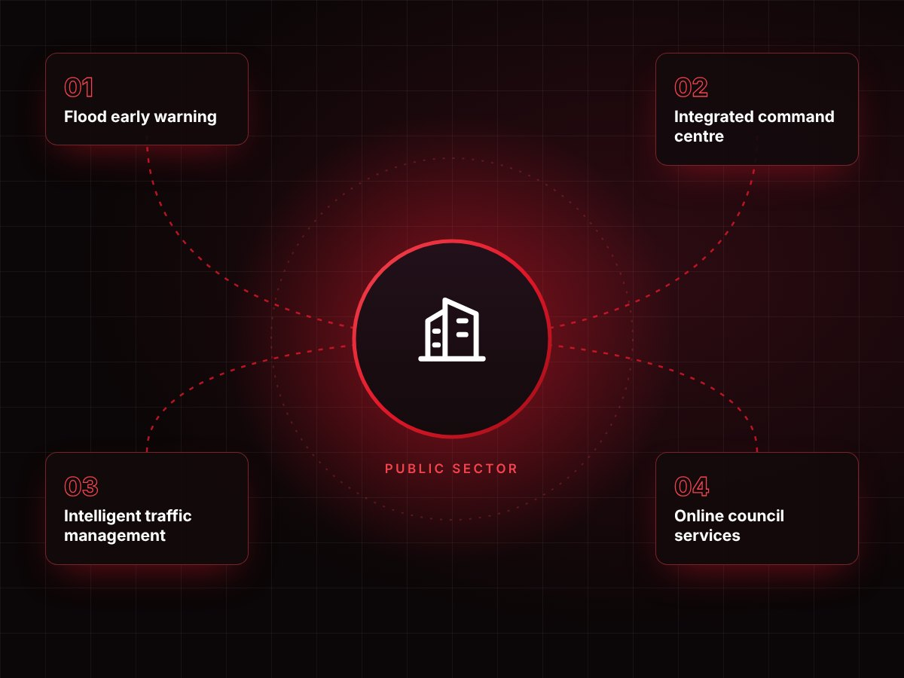

Smart City Solutions in Malaysia
Integrated digital platforms for safer, more efficient and more liveable cities.

images/smart-city/hero.jpg1600 × 900 px, JPGOverview
Cities and local authorities are under pressure to deliver better services, respond faster to incidents and use resources more efficiently — often with limited budgets and many disconnected systems.
Auxeon Consulting helps public-sector organisations plan and deliver smart city programmes that bring data, devices and services together. From integrated operations centres to traffic, flood and environment monitoring, we design solutions that deliver visible benefits to citizens and can grow over time.
Auxeon Consulting helps Malaysian local authorities, municipal councils and state agencies plan and deliver smart city initiatives aligned with the Malaysia Smart City Framework, including integrated operations centres, smart traffic and parking, CCTV video analytics, flood early-warning systems and digital citizen services.
videos/smart-city.mp4MP4 (H.264), under 50 MB, or a YouTube video IDWhat we deliver
End-to-end Smart City capabilities, from advisory and design to implementation and support.
City Operations Centre
One integrated view of city events, assets and services for faster response.
Public Safety
Video surveillance and analytics that help keep communities safe.
Smart Mobility
Traffic monitoring, signal optimisation and smart parking.
Utilities & Environment
Water, energy, air quality and flood monitoring with early warnings.
Digital Citizen Services
Portals, apps and e-payments that make services easy to access.
Urban Data & GIS
Data platforms and maps that support planning and decisions.
Where it makes a difference
Flood early warning
Sensors and alerts that give communities time to prepare.
Integrated command centre
Agencies coordinating incidents from one shared platform.
Intelligent traffic management
Reduce congestion with data-driven signal control.
Online council services
Licences, payments and complaints handled digitally.

images/smart-city/use-case.jpg1200 × 900 px, JPGBusiness value
Faster response
Real-time visibility across city operations.
Safer communities
Earlier detection of risks and incidents.
Better citizen experience
Convenient, digital-first public services.
Smarter planning
Decisions backed by real urban data.
Our delivery approach
Vision
Align stakeholders on priorities, outcomes and governance.
Blueprint
Design the architecture, data model and phased roadmap.
Deploy
Implement platforms, devices and integrations in phases.
Operate
Run, support and expand services as the city grows.
Frequently asked questions
What smart city solutions do you provide for municipal councils?
We deliver integrated operations centres, public safety and video analytics, smart traffic and parking, environment and flood monitoring, and digital citizen services.
Are your smart city projects aligned with the Malaysia Smart City Framework?
Yes. We help councils prioritise use cases, design a phased roadmap and measure outcomes in line with the national framework.
Can smart city solutions start small?
Yes. Most councils begin with one or two high-impact use cases, such as flood warning or traffic, and expand on a shared platform.
Other solutions
Let's talk about Smart City.
Tell us about your requirements, tender or project. Our team will get back to you promptly.
Send an Enquiry →